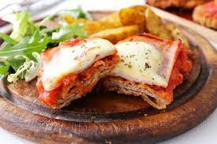

Odin Recipes

Receta Lasagna
La lasaña (en italiano, lasagna) es un tipo de pasta. Se suele servir en láminas superpuestas intercaladas con
capas
de ingredientes al gusto, más frecuentemente carne (ragú) en salsa boloñesa y bechamel. Su origen es italiano y
el plato preparado usualmente con carne suele llamarse lasaña al horno.
ingredientes
- 3 1/2 libras de carne de res molida
- 2 cucharaditas de ajo en polvo Ajo en polvo
- 2 cucharadas de Caldo de Carne de Res MAGGI®
- 1 cucharada de aceite vegetal
- 1/3 taza de cebolla cortada finamente
- 3 dientes de ajo cortados finamente
- 1/2 taza de apio cortado finamente
- 1 sobre de Salsa De Tomate Bolognesa MAGGI®
- 3/4 taza de agua
- 4 hojas de laurel
- 3/4 libra de pasta para lasaña cocida Pasta de lasaña precocida
- 2 tazas de queso mozzarella rallado
- Sal y pimienta al gusto
- 1 taza de queso parmesano
Pasos
- En un tazón, colocar la carne, el ajo en polvo, el Caldo de Carne de Res MAGGI® 2, la pimienta molida y
marinar por 5 minutos.
- En una cacerola grande, colocar el aceite, la cebolla, el ajo, el apio y sofreír por 2 minutos.
- Añadir la carne y cocinar por 10 minutos revolviendo constantemente.
- Cuando la carne adquiera una tonalidad gris clara, añadir la Salsa de Tomate MAGGI® estilo Boloñesa, el
agua, las hojas de laurel, la sal y pimienta y cocinar a fuego medio por 15 minutos.
- Armado de la lasaña: Al momento de montar la lasaña, untar con un poco de aceite un recipiente refractario o
la bandeja que utilice. Colocar una pequeña cantidad de salsa, cubrir el fondo de la bandeja con lascas de
pasta precocida, verter una cantidad pequeña de carne, añadir el queso mozzarella y una mínima parte de
queso parmesano.
- Repetir este procedimiento hasta rellenar el recipiente. Finalmente, colocar una capa de pasta precocida, la
salsa que haya quedado y cubrir con los quesos. La lasaña tiene que tener una buena cantidad de líquido para
que la pasta se cocine. Si está muy seca, se le puede agregar caldo de pollo.
- Taparla con papel aluminio y llevar al horno a 150°C por 40 minutos.
- Paso adicional: A esta receta le puede agregar aceitunas negras y hojas de albahaca al momento de cocinar la
carne.

Receta Flan casero
Leche, huevos y azúcar es todo lo que necesitarás para preparar este flan de caramelo casero. Aunque tenemos la
opción de comprarlo ya hecho y ahorrarnos ese tiempo, lo cierto es que el sabor del producto industrial no tiene
nada que ver con el preparado en casa, siendo este último mucho mejor. Si eres de los que disfrutan tanto como
yo en la cocina y prefieren aprender a cocinar sus propios postres caseros, sigue leyendo y descubre el paso a
paso que detallo en RecetasGratis.net.
ingredientes
- (240 g.) 1 taza de azúcar
- (395 g.) 1 lata de Leche Condensada La Lechera®
- (315 g.) 1 lata de Leche Evaporada Ideal®
- (60 g.) 1/4 taza de Nesquik® chocolate en polvo
- (300 g.) 6 huevos
Pasos
- Precalentar el horno a 200°C.
- En una olla pequeña, fundir el azúcar hasta formar caramelo y verter en el monde para el flan.
- Licuar por 2 minutos la Leche Condensada LA LECHERA®, la Leche Evaporada IDEAL®, el Nesquik® y los huevos.
- Verter la mezcla en el molde con el caramelo. Colocar el molde dentro de otra bandeja para horno con agua
“baño maría”.
- Llevar al horno a 150 °C por 1 hora.
- Retirar del horno, dejar reposar 5 minutos a temperatura ambiente y luego refrigerar por 1 hora. Pasado el
tiempo en la nevera, desmoldar y degustar.
Receta Milanesa Napolitana
¿Podemos declarar a la milanesa como la mejor comida que existe en el planeta tierra?
Lo tiene todo: es fácil de preparar, queda RIQUÍSIMA siempre, con queso, jamón y salsa de tomate por encima suma
1000 puntos. Y, como si todo esto fuera poco, se adapta al tipo de carne que tengas en la heladera, sea pollo,
cerdo o carne vacuna (aunque todos estamos de acuerdo en que esta última es la más deliciosa, ¿no?).
En este paso a paso súper sencillo, te vamos a mostrar la forma DEFINITIVA de cómo preparar unas excelentes
milanesas napolitanas acompañadas por la mejor guarnición posible: unas TREMENDAS papas fritas, bien cocidas por
fuera y tiernas por dentro.

ingredientes
Para la milanesa
- 1 kilogramo de carne de res para milanesa
- 300 gramos de pan rallado
- 3 huevos
- 1 diente de ajo picado
- perejil fresco (a gusto)
Para la salsa de tomate
- 3 cucharadas de salsa de tomate deshidratada Knorr
- 240 cc de agua
Para el acompañamiento
- 500 gramos de papas fritas
Extra
- 150 gramos de queso fresco cortado en cubos
- 150 gramos de jamón cocido